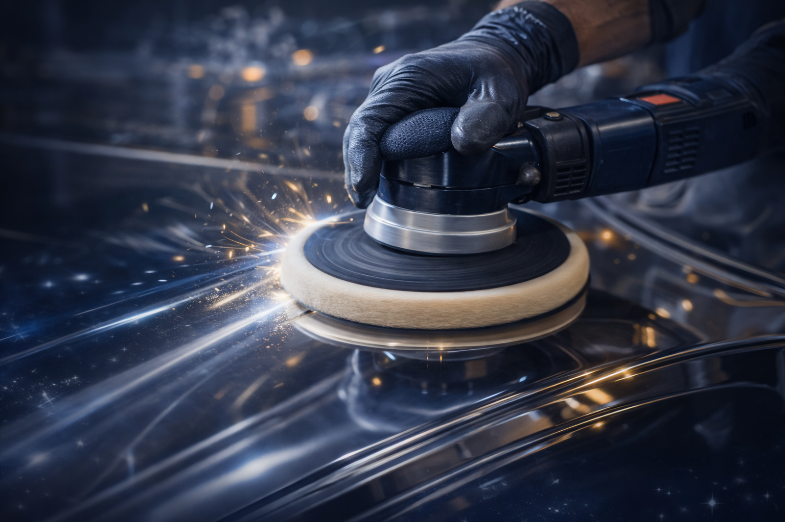

Ajudamos empresas a aumentar o valor de venda de seus produtos por meio de polimento profissional de alto padrão, reduzindo custos com retrabalho, desperdícios e descartes de material.


Tratamento técnico para inox que elimina riscos, rebarbas e imperfeições, garantindo brilho uniforme, estética premium e maior durabilidade.

Acabamento espelhado em cubas de pia, elevando o padrão visual do produto final e agregando valor comercial.

Processos voltados à produção em escala, com alta produtividade, padronização de acabamento e redução de custos operacionais.
Nosso compromisso é entregar acabamento de alto padrão, valorizando cada peça com qualidade, segurança e eficiência.

Oferecer serviços especializados de polimento em metais com excelência, proporcionando acabamento de alto padrão, valorização das peças e maior durabilidade dos materiais. Nosso compromisso é atender cada cliente com qualidade, agilidade e precisão, contribuindo para a redução de desperdícios e aumento do valor final dos produtos.

Ser reconhecida como uma empresa referência em polimento técnico e acabamento de metais, destacando-se pela qualidade dos serviços, inovação nos processos e confiança construída com nossos clientes e parceiros.

Rua Exemplo, 123 – Jardim Exemplo – Sua Cidade/SP